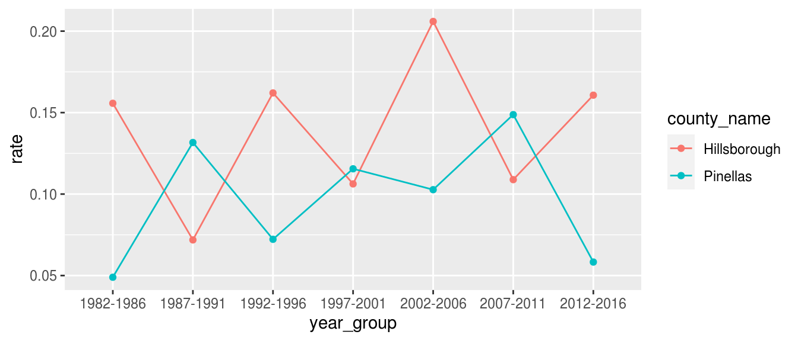

The fcds package doesn’t include data from the FCDS Florida Cancer Registry. Please visit the FCDS Data Request page to request the most recent Florida Statewide Cancer Registry data.
Once you have downloaded the data, you can use fcds to pre-process and import the FCDS data into R.
fcds <- fcds_import("STAT_dataset_2018.dat")
The imported, pre-processed data is automatically cached in the .fcds directory in your home directory for later use. Calling fcds_load() will re-load the cached data.
fcds <- fcds_load()
You can customize the folder where the cached data files are stored; see ?fcds_default_data_path for more information.
You can also list the files currently stored in the data cache with fcds_cache_ls() and you can clean outdated files with fcds_cache_clean(), which by default retains the most recently imported FCDS data file.
If you don’t have access to the FCDS data, we have provided a small example data set with similar properties to the FCDS data, but without any overlap in the attributes of cases.
fcds <- fcds::fcds_example fcds[1:5, ] #> # A tibble: 5 x 36 #> patient_id year_group year cancer_status cancer_site_gro… cancer_site_spe… #> <dbl> <fct> <chr> <fct> <fct> <fct> #> 1 10001 1982-1986 1984 Unknown Colon excluding… "Cecum, Appendi… #> 2 10002 1982-1986 1984 Evidence of … Breast "Breast" #> 3 10003 1982-1986 1984 Evidence of … Lung and Bronch… "Lung & Bronchu… #> 4 10004 1982-1986 1984 No evidence … Colon excluding… "Cecum, Appendi… #> 5 10005 1982-1986 1984 Unknown Colon excluding… "Cecum, Appendi… #> # … with 30 more variables: cancer_confirmation <fct>, age_group <fct>, #> # race <fct>, sex <fct>, origin <fct>, marital_status <fct>, #> # county_name <fct>, county_fips <chr>, state <fct>, florida_resident <lgl>, #> # country <fct>, birth_country <fct>, birth_state <fct>, primary_payer <fct>, #> # cancer_reporting_source <fct>, cancer_ICDO3_conversion <fct>, #> # cancer_laterality <fct>, cancer_grade <fct>, cancer_ICDO3_histology <chr>, #> # cancer_ICDO3_behavior <fct>, cancer_ICDO3_morphology <chr>, #> # seer_stage_1977 <fct>, seer_stage_2000 <fct>, seer_stage <fct>, #> # seer_stage_derived_1977 <fct>, seer_stage_derived_2000 <fct>, #> # tobacco_cigarette <fct>, tobacco_other <fct>, tobacco_smokeless <fct>, #> # tobacco_nos <fct>
Lookup the values of variables in the imported data (referred to as a labels of the original data value) with fcds_const()
fcds_const(NULL) #> Valid fcds_const() variables include: "year_group", "cancer_status", "cancer_site_group", "cancer_site_specific", "cancer_confirmation", "age_group", "race", "sex", "origin", "marital_status", "county_name", "state", "country", "birth_country", "birth_state", "primary_payer", "cancer_reporting_source", "cancer_ICDO3_conversion", "cancer_laterality", "cancer_grade", "cancer_ICDO3_behavior", "seer_stage_1977", "seer_stage_2000", "seer_stage_derived_1977", "seer_stage_derived_2000", "tobacco_cigarette", "tobacco_other", "tobacco_smokeless", "tobacco_nos", "moffitt_catchment" fcds_const("cancer_status") #> [1] "No evidence of tumor" "Evidence of tumor" "Unknown"
If you supply full = TRUE, the original column name (name_original) and value from the FCDS data will be reported alongsize the cleaned column name (name_clean) and the value label used by the fcds package.
fcds_const("cancer_site_group", full = TRUE) #> # A tibble: 41 x 4 #> name_clean name_original value label #> <chr> <chr> <chr> <chr> #> 1 cancer_site_group FCDS_Site_Group 0110 Oral Cavity and Pharynx #> 2 cancer_site_group FCDS_Site_Group 0011 Esophagus #> 3 cancer_site_group FCDS_Site_Group 0012 Stomach #> 4 cancer_site_group FCDS_Site_Group 0013 Small Intestine #> 5 cancer_site_group FCDS_Site_Group 1422 Colon excluding Rectum #> 6 cancer_site_group FCDS_Site_Group 2324 Rectum and Rectosigmoid Junction #> 7 cancer_site_group FCDS_Site_Group 0025 Anus, Anal Canal & Anorectum #> 8 cancer_site_group FCDS_Site_Group 2627 Liver and Intrahepatic Bile Duct #> 9 cancer_site_group FCDS_Site_Group 0028 Gall Bladder #> 10 cancer_site_group FCDS_Site_Group 0029 Other Biliary #> # … with 31 more rows
All of the variables in the imported FCDS data are documented in ?fcds_import. You can also list common groups of fcds variables using fcds_vars().
fcds_vars("demo") #> [1] "age_group" "race" "sex" "origin" #> [5] "marital_status" "birth_country" "birth_state" "primary_payer" fcds_vars("cancer") #> [1] "cancer_status" "cancer_site_group" #> [3] "cancer_site_specific" "cancer_confirmation" #> [5] "cancer_reporting_source" "cancer_laterality" #> [7] "cancer_grade" "cancer_ICDO3_histology" #> [9] "cancer_ICDO3_behavior" "cancer_ICDO3_morphology" #> [11] "cancer_ICDO3_conversion"
These column names can be used in conjunction with dplyr::select(), or you can supply FCDS data to fcds_vars() using the .data argument to select matching columns.
fcds %>% select(fcds_vars("id", "demo")) #> # A tibble: 8,062 x 11 #> patient_id year_group year age_group race sex origin marital_status #> <dbl> <fct> <chr> <fct> <fct> <fct> <fct> <fct> #> 1 10001 1982-1986 1984 0 - 4 White Male Hispa… Single, Separ… #> 2 10002 1982-1986 1984 0 - 4 White Male Hispa… Single, Separ… #> 3 10003 1982-1986 1984 5 - 9 White Fema… Hispa… Single, Separ… #> 4 10004 1982-1986 1984 5 - 9 Other Fema… Hispa… Single, Separ… #> 5 10005 1982-1986 1984 10 - 14 Black Male Hispa… Single, Separ… #> 6 10006 1982-1986 1984 15 - 19 Black Fema… Unkno… Unknown #> 7 10007 1982-1986 1984 15 - 19 Other Male Hispa… Single, Separ… #> 8 10008 1982-1986 1984 15 - 19 White Fema… Hispa… Unknown #> 9 10009 1982-1986 1984 15 - 19 Black Fema… Non-H… Married; Unma… #> 10 10010 1982-1986 1984 15 - 19 Other Male Hispa… Single, Separ… #> # … with 8,052 more rows, and 3 more variables: birth_country <fct>, #> # birth_state <fct>, primary_payer <fct> fcds_vars(.data = fcds, "id", "icdo3") #> # A tibble: 8,062 x 7 #> patient_id year_group year cancer_ICDO3_co… cancer_ICDO3_hi… #> <dbl> <fct> <chr> <fct> <chr> #> 1 10001 1982-1986 1984 Converted witho… 8010 #> 2 10002 1982-1986 1984 Originally code… 8500 #> 3 10003 1982-1986 1984 Converted witho… 8070 #> 4 10004 1982-1986 1984 Originally code… 8263 #> 5 10005 1982-1986 1984 Converted witho… 8140 #> 6 10006 1982-1986 1984 Originally code… 8140 #> 7 10007 1982-1986 1984 Originally code… 8140 #> 8 10008 1982-1986 1984 Converted witho… 8500 #> 9 10009 1982-1986 1984 Originally code… 8000 #> 10 10010 1982-1986 1984 Originally code… 8140 #> # … with 8,052 more rows, and 2 more variables: cancer_ICDO3_behavior <fct>, #> # cancer_ICDO3_morphology <chr>
Note: This data uses the fcds_example data and therefore bears no resemblance to reality. The examples herein are only relevant to the demonstration of the functions of the fcds package.
fcds_prostate <- fcds %>% # Filter to Prostate Cancer in two Florida counties filter( cancer_site_group == "Prostate Gland", county_name %in% c("Hillsborough", "Pinellas"), sex == "Male" ) %>% # Count incidences of Prostate Cancer count_fcds(county_name, cancer_site_group) %>% # Fill in missing age groups w.r.t. specified columns complete_age_groups( county_name, cancer_site_group, tidyr::nesting(year_group, year) ) %>% # Calculate age-adjusted rate from incidence age_adjust() %>% # Compute average yearly age-adjusted rate over 5 year range mutate(rate = rate / 5) fcds_prostate #> # A tibble: 14 x 7 #> # Groups: county_name, cancer_site_group, year_group, year [14] #> county_name cancer_site_group year_group year n population rate #> <fct> <fct> <fct> <chr> <dbl> <dbl> <dbl> #> 1 Hillsborough Prostate Gland 1982-1986 1984 5 731913 0.156 #> 2 Hillsborough Prostate Gland 1987-1991 1989 3 827378 0.0719 #> 3 Hillsborough Prostate Gland 1992-1996 1994 7 890958 0.162 #> 4 Hillsborough Prostate Gland 1997-2001 1999 5 984930 0.106 #> 5 Hillsborough Prostate Gland 2002-2006 2004 11 1108225 0.206 #> 6 Hillsborough Prostate Gland 2007-2011 2009 7 1214050 0.109 #> 7 Hillsborough Prostate Gland 2012-2016 2014 12 1319511 0.161 #> 8 Pinellas Prostate Gland 1982-1986 1984 4 793633 0.0490 #> 9 Pinellas Prostate Gland 1987-1991 1989 7 840882 0.132 #> 10 Pinellas Prostate Gland 1992-1996 1994 5 884441 0.0723 #> 11 Pinellas Prostate Gland 1997-2001 1999 7 917379 0.116 #> 12 Pinellas Prostate Gland 2002-2006 2004 5 928305 0.103 #> 13 Pinellas Prostate Gland 2007-2011 2009 9 915330 0.149 #> 14 Pinellas Prostate Gland 2012-2016 2014 3 937933 0.0583
This data can readily be passed to ggplot2 for visualization.
library(ggplot2) ggplot(fcds_prostate) + aes(year_group, rate, color = county_name, group = county_name) + geom_line() + geom_point()
